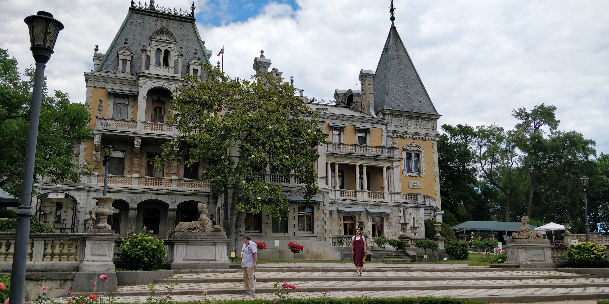
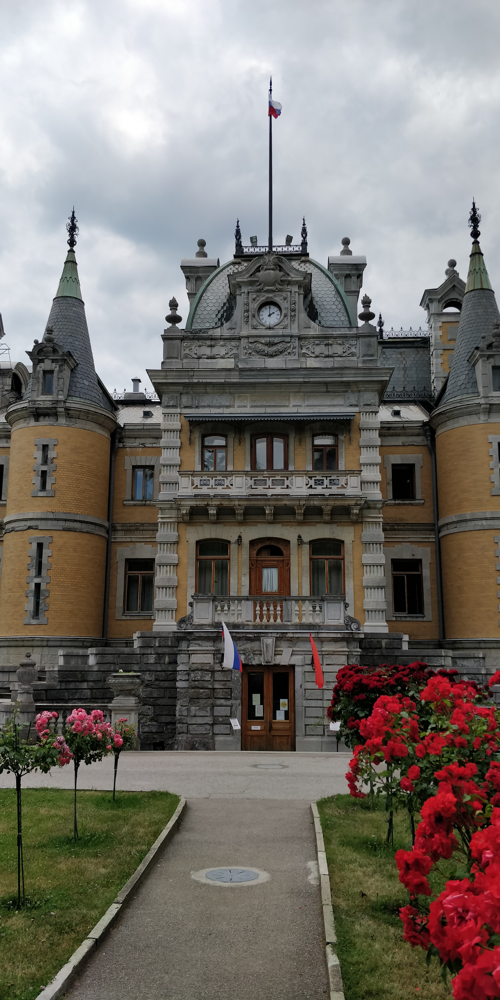
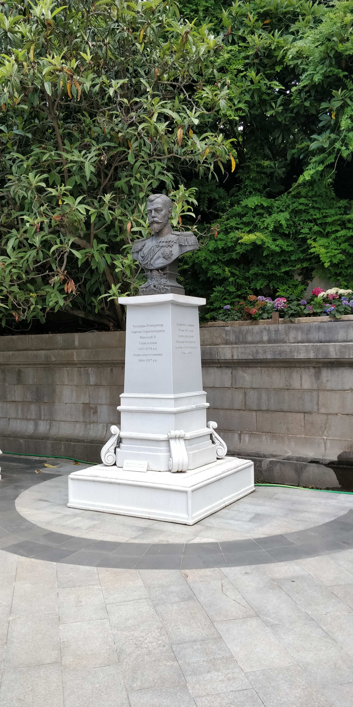
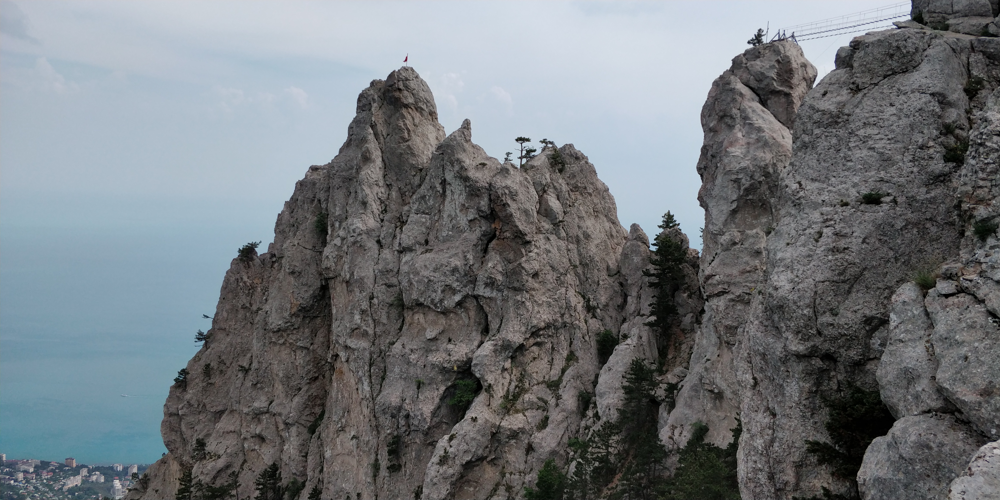
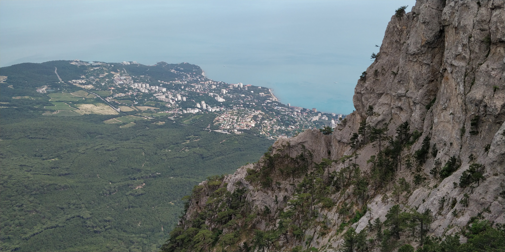
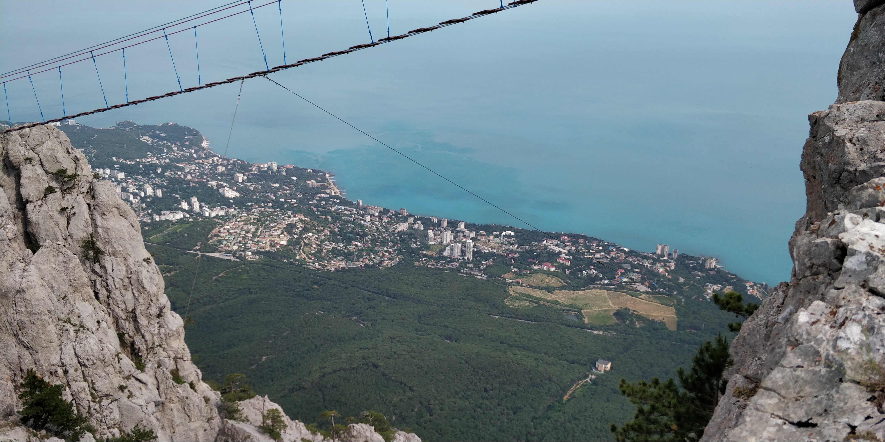
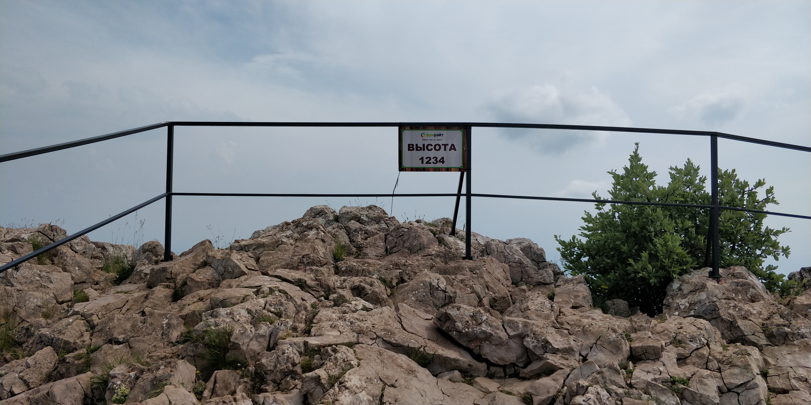
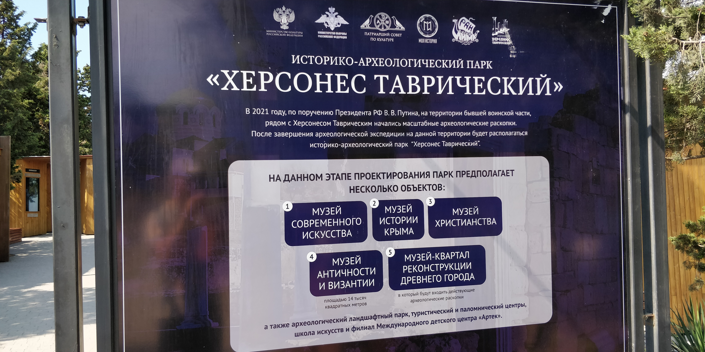
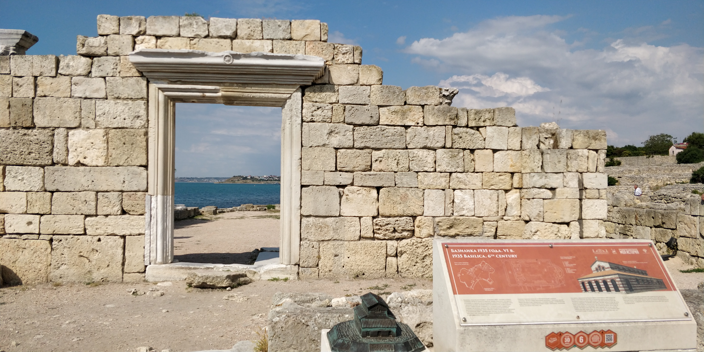

Массандровский дворец императора Александра III


Масса́ндровский дворец — памятник архитектуры конца XIX — начала ХХ века, дворец принадлежал российскому императору Александру III, расположен в Верхней Массандре на Южном берегу Крыма. Ныне это дворец-музей — филиал Алупкинского дворцово-паркового музея-заповедника.




Гора Ай-Петри


Гора Ай-Петри — это одна из самых известных гор Крыма, предлагающая захватывающие виды на окрестности
и множество маршрутов для пеших прогулок.


Херсонес Таврический


Древний город Херсонес Таврический, расположенный в Севастополе, является важным археологическими историческим памятником.

